Securityタグが付けられた新着記事 - Qiita
[PR] AI時代の開発生産性とセキュリティを考えるイベントのご紹介12月3日（木）18:00から、Qiita と F5ネットワークスジャパンの合同イベントを渋谷キャストで開催します。徳丸浩さんの基調講演と、コード改修なしでAPIと生成AIの通信を可視化・保護するF5のライブデモをお届けします。参加無料・お申し込みはこちら（connpass）
フィード
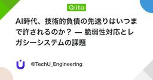


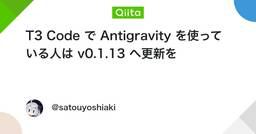
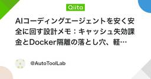

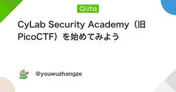
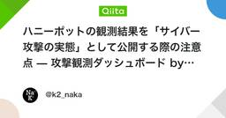
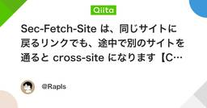
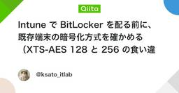
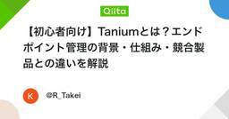
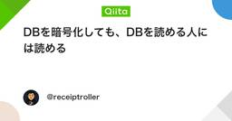


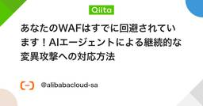
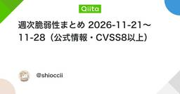

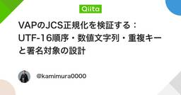


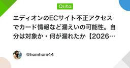
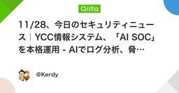
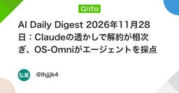

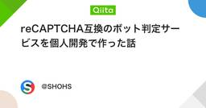


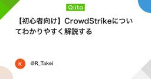

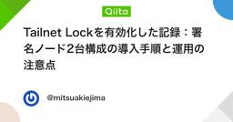


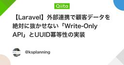


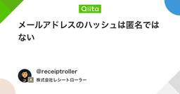


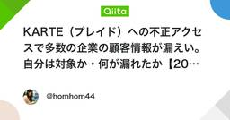
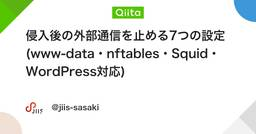


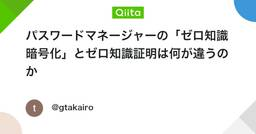


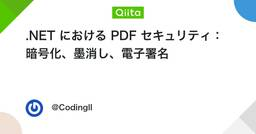
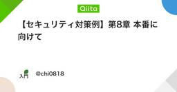


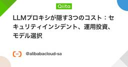
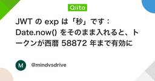
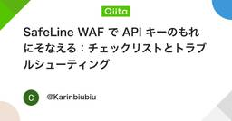

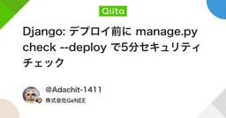


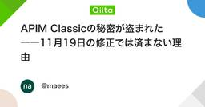

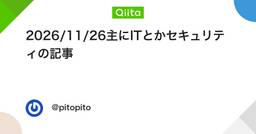
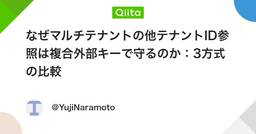

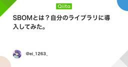
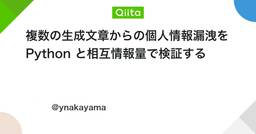
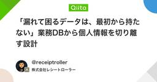

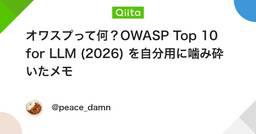


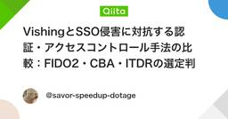


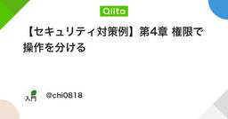
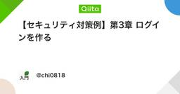

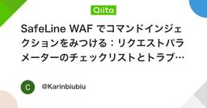
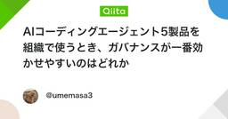
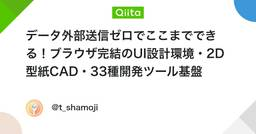


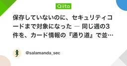
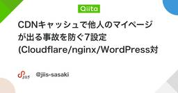


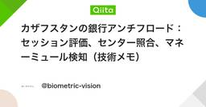


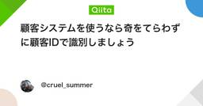

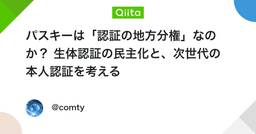


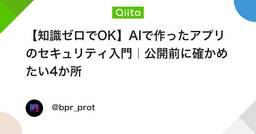
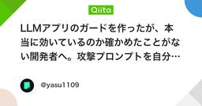
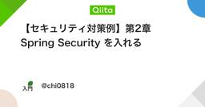